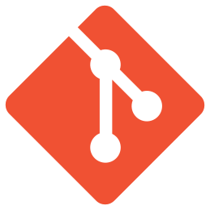

WebTools Workbench/zh-cn
一个外部工作台，包含一系列与FreeCAD内的Web服务进行通信的工具。 这是托管在[1]的外部工作台
WebTools is an external workbench containing a series of tools to communicate with Web services from within FreeCAD.
Installation
This workbench can be easily installed and updated from the Addon Manager available in FreeCAD 0.17 and above. For FreeCAD 0.16 users and other install methods, please refer to Installing additional contents.
Tools
 BIM server: 打开一个 BimServer 窗口
BIM server: 打开一个 BimServer 窗口
Git: 使用GIT管理文件- Sketchfab exporter: 导出和上传对象到你的SketchFab账户 introduced in 0.17
{kind=link}
{kind=link}
Links
- Source code hosted on GitHub: https://github.com/yorikvanhavre/WebTools
- Getting started
- Installation: Download, Windows, Linux, Mac, Additional components, Docker, AppImage, Ubuntu Snap
- Basics: About FreeCAD, Interface, Mouse navigation, Selection methods, Object name, Preferences, Workbenches, Document structure, Properties, Help FreeCAD, Donate
- Help: Tutorials, Video tutorials
- Workbenches: Std Base, Assembly, BIM, CAM, Draft, FEM, Inspection, Material, Mesh, OpenSCAD, Part, PartDesign, Points, Reverse Engineering, Robot, Sketcher, Spreadsheet, Surface, TechDraw, Test Framework
- Hubs: User hub, Power users hub, Developer hub